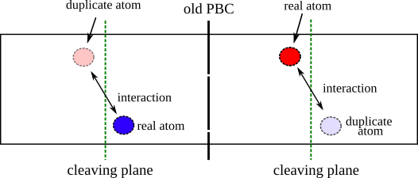
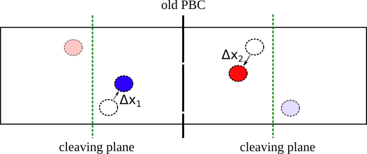
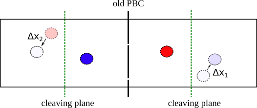

fix move/dupl¶
Description¶
This fix allows to translate the duplicate atoms of the same distance crossed by the corresponding real atoms. In step3 of the cleaving methodology the duplicate atoms allow to calculate the cross-cleaving plane interactions but they need to “follow” the real atoms when they move in a new position each time step.
In the step3 the system (solid+liquid) is duplicated and real and duplicate atom types are defined (see example LJ-SL for more details) as showin in the next Figure.

The duplicate atoms are used to keep track of the interactions crossing the cleaving planes, which are the ones to be calculated in order to find the total work in step3. However, the equations of motion must be integrated only for the real atoms. After the integration steo the real atoms move by a distance \(\Delta \mathbf{x}\) (see next Figure).

This fix allows the duplicated atoms to follow the movement of the corresponding real atoms. By specifying this fix we are moving the duplicated atoms by the same quantity calculated for the real atoms as shown in the next Figure.
